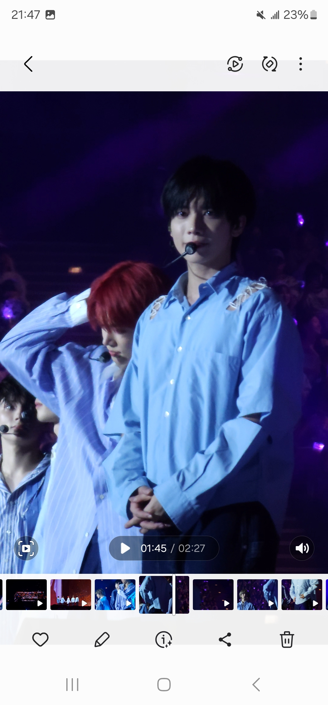

BTS
BTS（防彈少年團）是來自南韓的男子音樂團體，成立於2013年，由七名成員組成：RM、Jin、Suga、J-Hope、Jimin、V 和 Jungkook。他們的音樂涵蓋流行、嘻哈等多種風格，歌詞探討青春和社會議題。BTS在全球音樂市場取得巨大成功，是首個在美國告示牌 200 榜單上登頂的韓國團體。除了音樂成就，他們也積極參與社會運動，倡導心理健康和自我愛，擁有龐大的粉絲群體“ARMY”。
TOMORROW X TOGETHER
- 崔然竣:生日：1999年9月13日\擔當：主舞者、主唱\特點：擁有強大的舞蹈技巧和舞台存在感，個性活潑，喜歡與粉絲互動
- 崔秀彬: 生日：2000年12月5日\擔當：隊長\特點：擁有出色的舞台魅力和歌唱能力，性格溫柔且細心，經常照顧其他成員
- 崔杋圭: 生日：2001年3月13日\擔當：主唱、吉他手\特點：擁有多才多藝的音樂能力，幽默感強，喜歡開玩笑，經常帶來輕鬆的氛圍
- 姜太顯:生日：2002年2月5日\擔當：主唱\特點：音樂才華橫溢，擅長情感表達，性格認真，對音樂有強烈的熱情
- 休寧凱:生日：2002年8月14日\擔當：主唱、主舞者\特點：擁有國際化的背景，語言能力強，個性開朗，舞台表現力極佳
推薦我最喜歡的一首歌: miracle
Twice
TWICE是一支來自南韓的女子音樂團體，成立於2015年，隸屬於JYP Entertainment。團體由九名成員組成：Nayeon、Jeongyeon、Momo、Sana、Jihyo、Mina、Dahyun、Chaeyoung和Tzuyu。TWICE因其朗朗上口的旋律和活潑的舞蹈而受到廣泛喜愛。 TWICE的音樂風格多樣，涵蓋流行、舞曲和R&B，代表作包括《Like Ooh-Ahh》、《Cheer Up》和《Fancy》。她們的音樂視頻和現場表演常常展現出色的舞蹈編排和團隊合作，吸引了大量粉絲。 TWICE的成功不僅體現在音樂上，還在於其強大的粉絲基礎，稱為“Once”。團體以積極向上的形象和正能量的訊息鼓舞年輕人，並在全球範圍內擁有廣泛的影響力。TWICE的成員們各具特色，展現了不同的魅力，使得她們在K-pop界獨樹一格。
About Me
This is a brief introduction about yourself. You can talk about your education, interests, and what you enjoy doing.
Contact
You can reach me at: rachel05140516@gmail.com
Follow me on Twitter